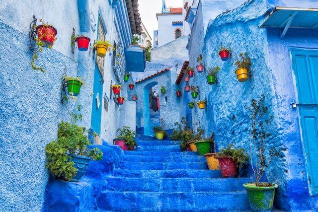

Exploring Morocco's Culinary Delights
Dive into the vibrant culture of Morocco, from its bustling souks to its tranquil deserts, and learn what makes this country so unique.
Morocco is a land of contrasts where ancient traditions blend seamlessly with modern influences. The lively markets, known as souks, are a sensory overload with their colorful textiles, aromatic spices, and intricate handicrafts. As you navigate through the narrow alleys , you can hear the calls of vendors and the rhythm of traditional Moroccan music.
Moroccan cuisine is a feast for the senses, a blend of bold flavors and aromatic spices that tell the story of the country's rich cultural heritage.
Beyond the cities, the serene beauty of the Moroccan deserts offers a stark contrast. The Sahara, with its golden dunes, provides a peaceful escape where you can experience the nomadic lifestyle and gaze at the star-filled sky. The culture of Morocco is also reflected in its cuisine, with flavors that tell stories of history and heritage. From the rich and savory tagines to the sweet and flaky pastries, every dish is a journey of its own.
Morocco's culture is a tapestry woven from the threads of Berber, Arab, and French influences, making it a truly unique and enriching destination. Whether you are exploring the ancient medinas or sipping mint tea in a traditional riad, the spirit of Morocco will captivate and inspire you.